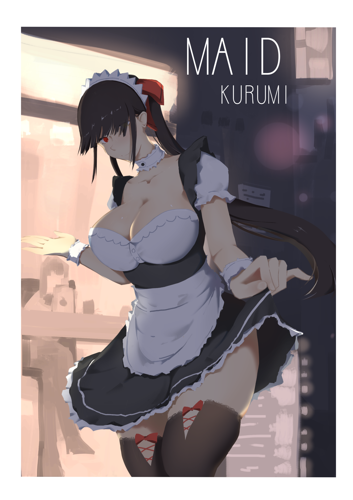
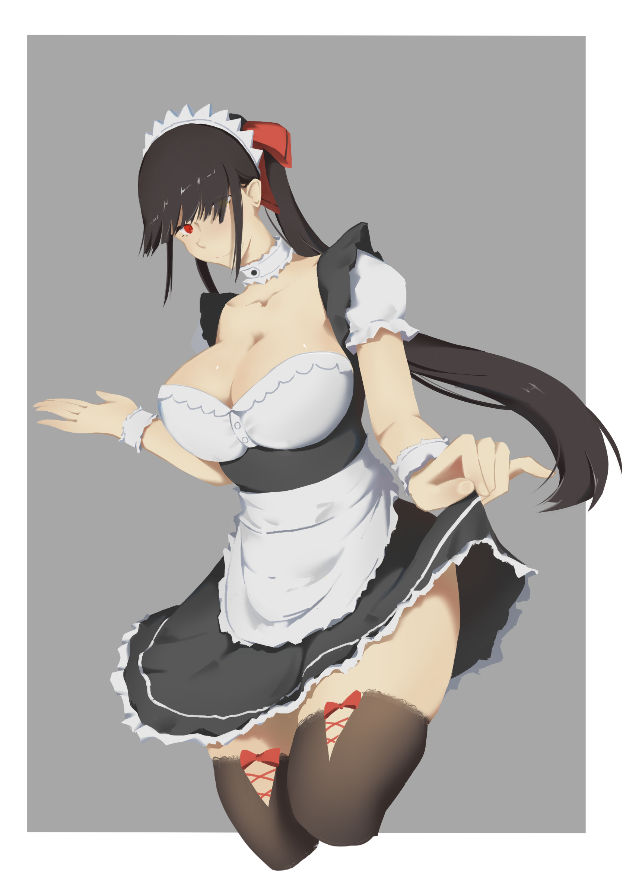

<div id="article_content" class="text-paragraph article_container"><div>「晚上的特別服務。」</div><div><br></div>畫完覺得腿看起來最舒服，<div>但後來還是壓背景上去，</div><div>就比較沒有什麼凸顯出來惹。</div><div><br></div><div>看圖ㄅ</div><div><br></div><div></div><div><br></div><div>去背景</div><div></div><div><br></div><div><br></div><div>這張大概就花了一天，</div><div>把以前的舊圖(黑歷史)重畫過，</div><div>步驟就跟<a href="https://home.gamer.com.tw/creationDetail.php?sn=4456652" target="_blank">上一篇</a>一樣。</div><div><br></div><div>其實一開始沒想要加背景、明暗交接線，</div><div>可是感覺整個太空，而且構圖怪怪的，</div><div>還有要強調的歐派被腿搶走，</div><div>所以還是壓了一層背景上去，</div><div>至少看起來穩定一些，</div><div>明暗交界線就是亂切的，背景大概只花十分鐘。</div><div><br></div><div>還有不要問我歐派為甚麼不太科學，</div><div>我還沒從巨乳中解脫，就這樣吧(*ﾟ∀ﾟ*)</div><script>
$('article.c-text img').load(function () {
// 表格內圖片大於表格寬時，設為 100%
if ($(this).parents('table').length != 0) {
if ($(this).width() >= $(this).parents('td').width()) {
$(this).width('100%');
} else {
$(this).width($(this).width() + 'px');
}
}
});
</script></div>